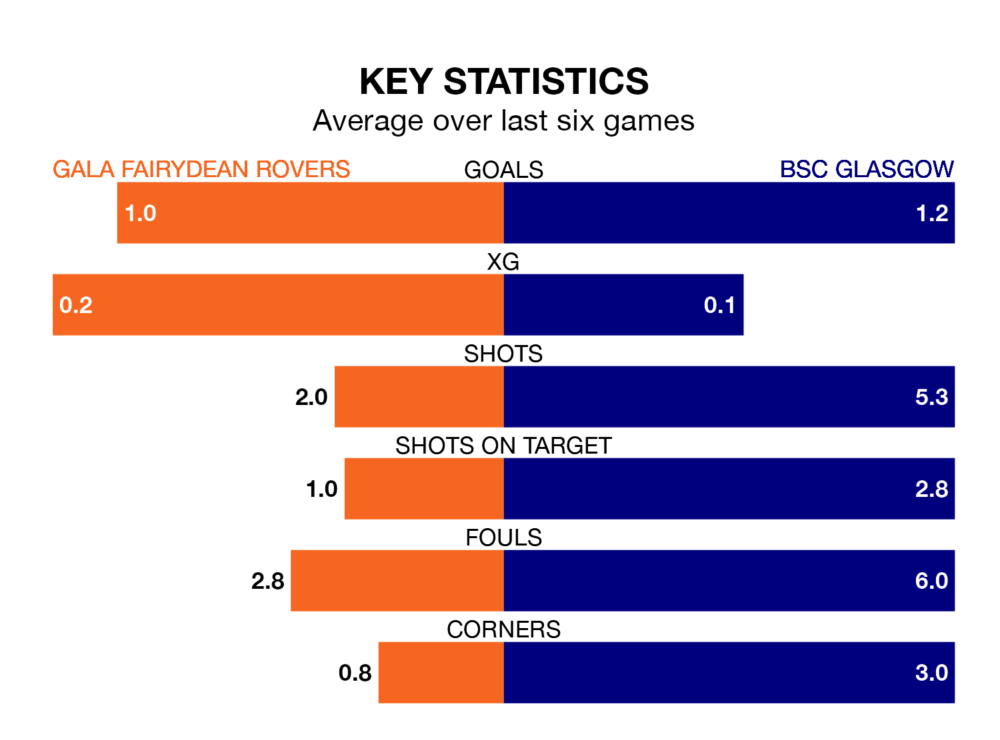

Gala Fairydean Rovers and BSC Glasgow will both be looking for points in Saturday's kick-off at the Netherdale Football Ground to end their losing streaks.
The two teams have both gone three Lowland Football League games without a win. Gala Fairydean have picked up just three points from their last six games, while BSC Glasgow have earned just four.
In the last 10 years, Gala Fairydean and BSC Glasgow have played each other on 16 occasions. Gala Fairydean won seven of them, BSC Glasgow six, and they drew three times.
On average, Gala Fairydean scored 1.9 goals and BSC Glasgow 2.4 in those matches.
Their last meeting was on August 26, when Gala Fairydean won 3-2 away.
Gala Fairydean are 15th in the table after 29 games, of which they have won eight and drawn four, earning 28 points.
BSC Glasgow are one place ahead of Rovers in 14th, with eight wins and four draws putting them on the same number of points.
With 40 goals in 29 games so far this season, the home team are scoring at below the league average rate with 1.4 goals per game. And they are conceding more than average, letting in 75 goals at a rate of 2.6 per game.
The visitors are also below average scorers, with 1.4 goals per game, compared to a league average of 1.7. They have conceded 1.7 goals per game.
Gala Fairydean's last match was on March 2, a 5-1 loss against Bo'ness United.
BSC Glasgow lost 3-1 against Tranent Juniors last time out, on February 25.
Updated: 09:34 (UTC), 08/03/24